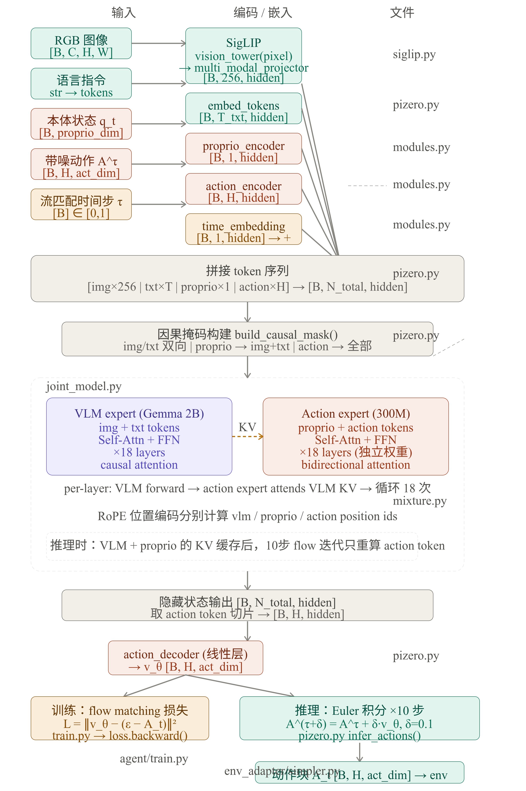

核心思路
Conditional Flow Matching (CFM)：学习一个速度场 ，把噪声 "推" 到真实动作 。训练时在噪声-干净的插值路径上学速度，推理时用 Euler 积分沿速度场走 N 步。
一、Flow 路径定义 — psi_t（第 597-605 行）
python
def psi_t(x, x1, t): # x = x0 (噪声)
t = t[:, None, None] # (B,) → (B, 1, 1)
return (1 - (1 - σ_min) * t) * x + t * x1
这是线性插值路径：噪声 x0 到干净动作 x1 的直线。σ_min（默认 0.001）保证 t=1 时仍有一点点噪声，避免数值问题。
- t=0 → 纯噪声
x0 - t=1 →
σ_min * x0 + x1 ≈ x1
二、训练 — forward（第 607-661 行）
输入：
- 参数
input_idspixel_valuespropriosactionstcausal_mask
输出：
- 标量
loss = MSE(预测速度, 真实速度)
步骤：
python
1. x0 = randn_like(actions) # 纯噪声
2. psi_t = psi_t(x0, actions, t) # 噪声→干净的线性插值点
3. inputs_embeds = VLM(image + text) # 图像文本编码
4. proprio_embeds = Linear(proprios) # 本体感知投影
5. time_cond = SinusoidalPosEmb(t) # 时间步编码
6. action_embeds = ActionEncoder(psi_t, [time_cond]) # 编码含噪动作
7. action_embeds = JointModel( # 三路联合 Transformer
{vlm, proprio, action}, time_cond
)["action"]
8. v_psi = Linear(action_embeds) # 解码为预测速度
9. d_psi = actions - (1-σ_min)*x0 # 真实速度 (直线方向)
10. loss = MSE(v_psi, d_psi) # 目标：学习这个方向直观理解：
在噪声→干净路径的某个中间点 psi_t，模型被训练输出"往干净方向的速度"。每个时间步 t 都随机采样，覆盖整个路径。
三、推理 — infer_action（第 416-490 行）
输入： 和训练相同，但没有 actions（那是要推理出的结果）。
输出： (B, horizon_steps, action_dim) — 预测的未来动作轨迹。
步骤：
python
# Phase 1: 预计算 VLM + Proprio 的 KV Cache（不变）
1. inputs_embeds = VLM(image + text) # 编码图像文本
2. proprio_embeds = Linear(proprios)
3. kv_caches = JointModel( # 前向一次，缓存 KV
{vlm, proprio}, cache=append
)
# Phase 2: 从噪声出发，Euler 积分去噪
4. action = randn(B, horizon_steps, action_dim) # 初始化：纯噪声
5. Δt = 1 / num_inference_steps
6. for step in range(num_inference_steps):
time_cond = embed(t)
action_embeds = ActionEncoder(action, [time_cond])
action_embeds = JointModel(
{action}, time_cond,
kv_caches=vlm_proprio_cache, # 复用缓存的 VLM/Proprio KV
cache_mode="append_non_active" # action 不写缓存
)["action"]
action_vel = Linear(action_embeds) # 预测速度
action += Δt * action_vel # Euler 步进
t += Δt
关键优化：
VLM 和 proprio 在推理时不变，KV cache 计算一次后复用。每个去噪步只重算 action expert（轻量），大幅节省计算。